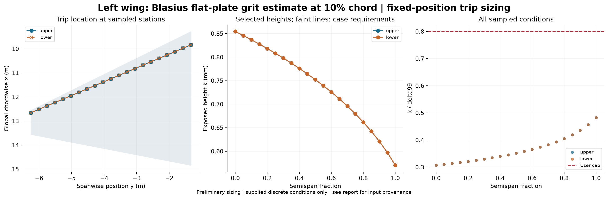

Status: feasible. IDEALIZED FLAT-PLATE ESTIMATE using user-supplied wing dimensions. Profiles are numerical solutions of the incompressible Blasius zero-pressure-gradient equations, not measured wing data or wing CFD. Both surfaces are identical by assumption. Surface distance s=x=(x/c)*local chord; Ue=Uinf and nu=nuinf. Sweep affects coordinates only; three-dimensional flow and crossflow are not modeled. Physical angle of attack was not supplied; alpha_deg=0 labels this idealized zero-pressure-gradient baseline and does not assert test AoA.
Source: profiles; critical Re_k: 600.0; height multiplier: 1.1; k/delta99 cap: 0.8.
Calibration: Subsonic equiaxed distributed grit; NASA TN D-3579. Mach cap 0.95 is a tool guard.

| surface | eta | x_c | height_mm | status | reason |
|---|---|---|---|---|---|
| upper | 0.0 | 0.1 | 0.8545485496728774 | feasible | |
| lower | 0.0 | 0.1 | 0.8545485496728774 | feasible | |
| upper | 0.05 | 0.1 | 0.8458901280546137 | feasible | |
| lower | 0.05 | 0.1 | 0.8458901280546137 | feasible | |
| upper | 0.1 | 0.1 | 0.8369540356775101 | feasible | |
| lower | 0.1 | 0.1 | 0.8369540356775101 | feasible | |
| upper | 0.15000000000000002 | 0.1 | 0.8277208114408038 | feasible | |
| lower | 0.15000000000000002 | 0.1 | 0.8277208114408038 | feasible | |
| upper | 0.2 | 0.1 | 0.8181645888068398 | feasible | |
| lower | 0.2 | 0.1 | 0.8181645888068398 | feasible | |
| upper | 0.25 | 0.1 | 0.8082580488373251 | feasible | |
| lower | 0.25 | 0.1 | 0.8082580488373251 | feasible | |
| upper | 0.30000000000000004 | 0.1 | 0.7979698588866185 | feasible | |
| lower | 0.30000000000000004 | 0.1 | 0.7979698588866185 | feasible | |
| upper | 0.35000000000000003 | 0.1 | 0.7872637572383553 | feasible | |
| lower | 0.35000000000000003 | 0.1 | 0.7872637572383553 | feasible | |
| upper | 0.4 | 0.1 | 0.7760974300881835 | feasible | |
| lower | 0.4 | 0.1 | 0.7760974300881835 | feasible | |
| upper | 0.45 | 0.1 | 0.7644221899700719 | feasible | |
| lower | 0.45 | 0.1 | 0.7644221899700719 | feasible | |
| upper | 0.5 | 0.1 | 0.7521797694549659 | feasible | |
| lower | 0.5 | 0.1 | 0.7521797694549659 | feasible | |
| upper | 0.55 | 0.1 | 0.7393020738868777 | feasible | |
| lower | 0.55 | 0.1 | 0.7393020738868777 | feasible | |
| upper | 0.6000000000000001 | 0.1 | 0.7257059030383242 | feasible | |
| lower | 0.6000000000000001 | 0.1 | 0.7257059030383242 | feasible | |
| upper | 0.65 | 0.1 | 0.7112893927054379 | feasible | |
| lower | 0.65 | 0.1 | 0.7112893927054379 | feasible | |
| upper | 0.7000000000000001 | 0.1 | 0.6959269456558195 | feasible | |
| lower | 0.7000000000000001 | 0.1 | 0.6959269456558195 | feasible | |
| upper | 0.75 | 0.1 | 0.6794600088125682 | feasible | |
| lower | 0.75 | 0.1 | 0.6794600088125682 | feasible | |
| upper | 0.8 | 0.1 | 0.6616816741211304 | feasible | |
| lower | 0.8 | 0.1 | 0.6616816741211304 | feasible | |
| upper | 0.8500000000000001 | 0.1 | 0.6423196676252683 | feasible | |
| lower | 0.8500000000000001 | 0.1 | 0.6423196676252683 | feasible | |
| upper | 0.9 | 0.1 | 0.6209999718053695 | feasible | |
| lower | 0.9 | 0.1 | 0.6209999718053695 | feasible | |
| upper | 0.9500000000000001 | 0.1 | 0.5971863952672499 | feasible | |
| lower | 0.9500000000000001 | 0.1 | 0.5971863952672499 | feasible | |
| upper | 1.0 | 0.1 | 0.5700733002132838 | feasible | |
| lower | 1.0 | 0.1 | 0.5700733002132838 | feasible |
Whole-wing uniform-height alternative: {'status': 'feasible', 'height_mm': 0.8545485496728774, 'reason': ''}
See per-condition results, design table, and full results and input hashes.